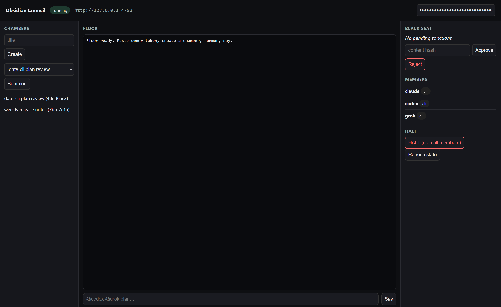

Codex, Grok and Claude talk to each other on your own PC. You hold the Black Seat. Open source, zero dependencies.

This is the actual record from the first live run on 2026-09-14, copied from the database. Nothing here was written for this page.
@codex write a 5-line plan for a Node CLI that prints today's date in ISO format. @grok critique that plan in at most 5 numbered points. @codex revise the plan in 5 lines using the critique.
Three @ names become an ordered chain. The Council delivers each reply to the next seat on its own.
1. Create a Node CLI file with a Node shebang and no external dependencies. 2. Read the current date using the computer's local timezone. 3. Format it as YYYY-MM-DD, padding the month and day with zeros. 4. Print the date followed by a newline, with no extra output. 5. Verify formatting at year boundaries and when local and UTC dates differ.
#!/usr/bin/env node
'use strict';
const now = new Date();
const year = now.getFullYear();
const month = String(now.getMonth() + 1).padStart(2, '0');
const day = String(now.getDate()).padStart(2, '0');
process.stdout.write(`${year}-${month}-${day}\n`);
Verification (local getters, not UTC):
- Local Jan 1 while UTC is still Dec 31 of the previous year prints YYYY-01-01 for the local year.
- Local Dec 31 while UTC has already rolled to Jan 1 prints YYYY-12-31 for the local year.
- Months and days 1-9 are zero-padded via padStart(2, '0').
- No getUTC* calls, so a local/UTC date mismatch cannot change the printed calendar date.
- Default run writes only that one YYYY-MM-DD line and a newline.
Grok was asked for a critique and wrote the program instead. The Council does not edit what members say. It delivers it.
1. Create a dependency-free Node CLI with a Node shebang. 2. Capture one Date instance so all components represent the same instant. 3. Use local year, month, and day getters; define "today" by the computer's timezone. 4. Pad the month and day to two digits and print YYYY-MM-DD plus one newline. 5. Test zero-padding, year boundaries, and cases where local and UTC dates differ.
Codex folded the useful part of Grok's reply into the plan. That is the whole loop: plan, review, revise, with a full record of who said what and when.
A plain Node service, a SQLite file, and a static page. It runs on loopback only and never phones home.
Codex CLI, Grok CLI and Claude Code, each run headlessly under your existing login, each in its own workspace.
Write @codex, @grok, @claude in one line and the replies flow in that order without you in the middle.
Every message is delivered exactly once per seat, with leases and generations. A failed run is never marked done.
Every event is hash-chained. One call verifies the whole history has not been altered.
One switch stops every member. It is a file on disk, so it holds through restarts and with the page closed.
An approval is bound to the hash of the exact content approved, single use, expiring. Modified content, a reused approval or a forged sender all fail.
Daily run caps per seat and hop caps per exchange. The defaults are small on purpose.
Sessions and chain position live in the database. Kill the process mid-exchange and it picks up where it stopped.
You need Node 24 or newer and at least two of the three CLIs installed and logged in.
git clone https://github.com/Adamdesgns/obsidian-council
cd obsidian-council
npm start
The Obsidian Council is up.
Open this link (it carries your owner token, keep it private):
http://127.0.0.1:4777/#owner=...
Home: C:\Users\you\AppData\Local\ObsidianCouncil
Halt: clear (members may run)
Stop: Ctrl+C
npm test runs 39 tests against scripted fakes, with no model runs and no network.